Published: 2022-12-23
Source link: https://www.cnphotos.net/academy/show-107.html
Double 11 and Double 12 have closed one after another, and the growth of e-commerce live streaming is still strong. Meanwhile, the four representative streaming rooms that JiaLive renovated together with Taobao Live scored well in this year's e-commerce streaming. They set a new standard for the future development of the industry.
Official data shows that during Double 11, Taobao Live had 62 streaming rooms with sales over 100 million yuan and 632 rooms with sales over 10 million yuan, and sales by new hosts rose 345 percent year on year. For this result, Taobao Live prepared fully, from helping merchants understand the Double 11 rules down to raising the image quality of streaming rooms. Back in September, Taobao Live held a merchant conference for Double 11 to explain the streaming schedule and policy rules. In this Double 11, with streaming at its core, if the biggest task for every brand is to raise fan loyalty through streaming and drive new sales, then improving the viewing experience in the room is one of the keys to keeping consumers there.
A better viewing experience cannot happen without higher image quality in the room, and image quality is the source of high quality. 'After collecting user feedback and visiting offline rooms many times, we found that in real streaming many hosts lack experience in how to operate the imaging equipment before pushing the stream, and how to tune it up,' said Jiu Yu, head of merchant streaming service providers at Taobao Live.
To benefit more rooms, especially small and mid-tail rooms, and help raise image quality, Taobao Live joined Canon's JiaLive high-definition streaming solution (JiaLive for short) to release the Guide to High-Quality E-commerce Live Streaming. It aims to help users raise streaming image quality through standardization and low-cost learning, and to lower the threshold for hosts to start in high definition.
As a brand focused on imaging technology for more than 80 years, Canon (China) still holds strong advantages in streaming with its color science and dual-pixel CMOS AF technology. For the streaming market, Canon launched the JiaLive high-definition streaming solution. Through JiaLive, it offers a one-stop room-building solution, covering the design, installation, tuning, and image guidance of the room. The equipment ranges from digital cinema cameras, all-in-one camera-controller units, professional camcorders, full-frame mirrorless, and compact mirrorless cameras, with a rich choice of models and lenses, plus the matching switcher andsoftware, and together with accessories such as lights, microphones, and cables, it completes a full high-quality streaming-room solution.
Just before Double 11, JiaLive joined Taobao Live to start a room renovation plan, and finally chose four representative rooms covering beauty and personal care, food and wine, and jewelry. Based on each brand's needs, JiaLive offered room solutions ranging from 20,000 to 100,000 yuan.
Insights before the renovation: low cost and high quality are both essential.
The four rooms in this edition are all from Hangzhou. In the e-commerce streaming circle, the saying goes that Chinese streaming looks to Hangzhou. As the capital of e-commerce, and relying on the strength of traditional e-commerce, Hangzhou long ago turned e-commerce streaming into a new e-commerce model, and it has grown explosively. Here, e-commerce streaming has become a new industrial cluster. According to figures released by the Zhejiang Provincial People's Government Information Office in 2021, more than 60 percent of e-commerce streaming agencies gather in Hangzhou, and they offer brands professional incubation and operation services.
JiaLive found on visits that most rooms face cost pressure from rent and hosts. With a green-screen background, one camera ora phoneplus a ring light is the standard setup of most rooms. It saves cost, but it also brings problems, such as phone streaming that is not sharp enough, green-screen keying that is not yet mature enough to look good, and too few lights leading to uneven light on the face. Yet the look of a high-definition room is especially critical. On one hand it shows product detail more clearly and improves the viewer's experience. On the other hand, for the brand, a high-quality room fits the brand tone better. In many rooms, consumers who click in and find poor image quality question whether the brand room is real, and wonder if they entered a fake one.
Based on the brand's needs, how do you raise image quality at low cost? This edition, JiaLive offered four targeted high-definition streaming solutions for the AHC room, the Forvil Windsor Forest room, the RIO room, and the TSL room.
JiaLive staff tune the AHC room.
Case 1: beauty and skincare. The host's skin must look good.
AHC is a high-end clinical SPA skincare brand from Korea, devoted to helping women find their own ultimate beauty. AHC's service provider, Fanyin Culture, serves beauty brands and has rich experience in beauty streaming. In their view, in a skincare room, besides a good price, the texture of the host's skin is a hidden factor that moves viewers to buy. 'We hope to raise the clarity of the room through this renovation, and make the product and its presentation look more premium. Right now the room has problems: the host's facial outline is not clear, and the light on the face is uneven. Green-screen keying leaves an unclean edge around the host, so a green rim stays along the body and hurts the texture. Also, the product is not shown clearly, the close-up is soft, and because the close-up camera has no green screen, the background looks cluttered every time a product is shown,' said Xiao Lan, head of the AHC room at Fanyin Culture.

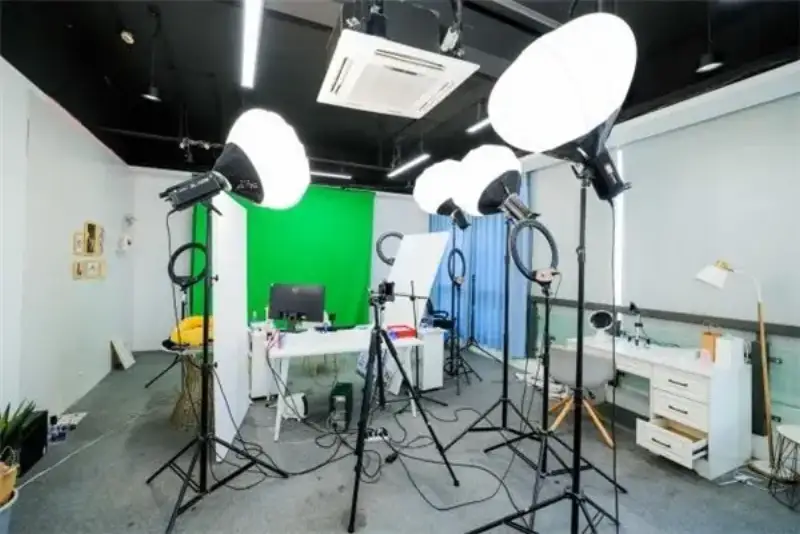
Problems before the AHC renovation: poor light layout, unclear light on the face.

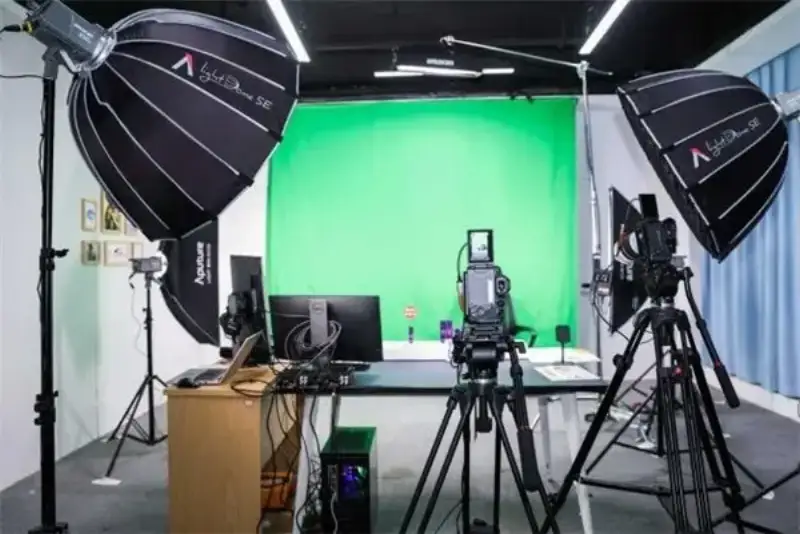
After: fewer lights, and a better light layout.
For the room's needs, JiaLive kept the AHC room's habit of dual-camera streaming. Both the main camera and the close-up camera are the Canon EOS R7. Continuing Canon's color science, the skin tone under the EOS R7 is fair, clear, and soft, and it reproduces product color precisely. It also performs well in focus speed and accuracy. The main camera is paired with the RF24-105mm lens, to meet the Double 11 need for two hosts explaining a product together. The close-up camera is paired with the RF70-200mm lens to shoot product close-ups, so detail is magnified and shown fully and clearly. JiaLive also improved the AHC room's light layout, adding product light, face light, and rim light, so the host's makeup looks more three-dimensional.

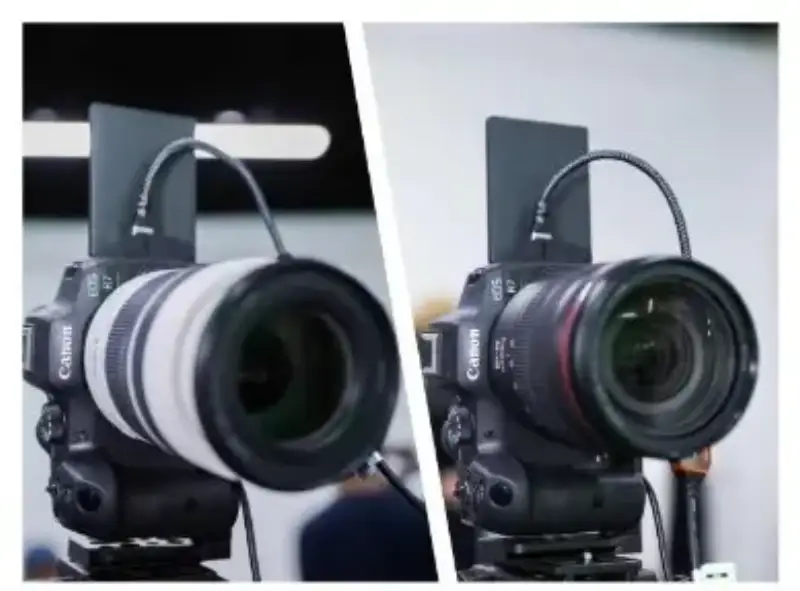
The AHC room uses two Canon EOS R7 cameras.

The main camera is the Canon EOS R7. The R7 performs well in skin tone and focus.

The second camera is the Canon EOS R7 with the RF70-200mm lens, to show product detail.

Streaming frame comparison: before vs after.
Case 2: hair care. The texture of the hair ends must be kept.
Forvil Windsor Forest comes from France. It is a hair-care brand with 96 years of history, devoted to bringing consumers ultimate care and French fragrance. The service provider for Forvil Windsor Forest is Hangzhou Weituo Technology, a tech company founded in 2018 that keeps deepening the streaming ecosystem, and it keeps seeking new ways to improve room image quality. In Yan Tingting's view, head of the Forvil room at Weituo Technology, the hard part of the room is showing the detail of the host's hair. 'We hope this optimization raises the texture of the host's hair, improves the close-up product display, and fixes the green-screen keying problem.'

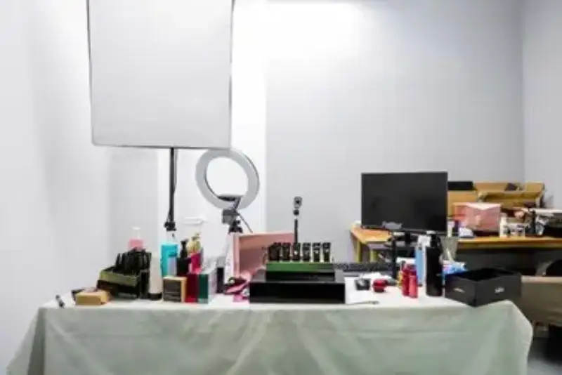
Before

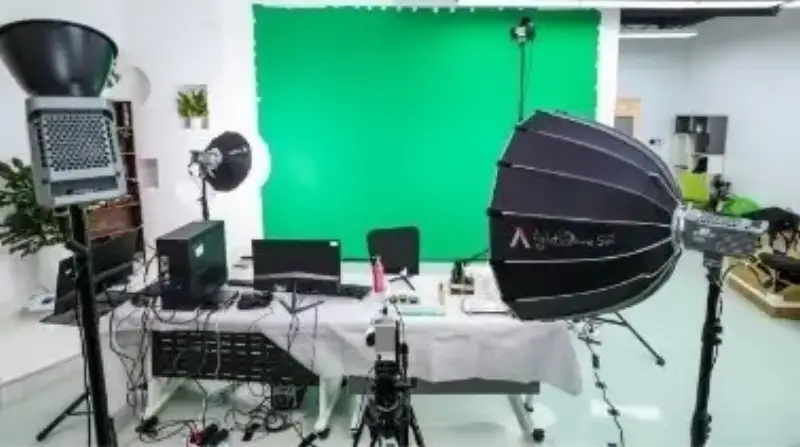
After
JiaLive chose the Canon EOS M50 Mark II for the Forvil Windsor Forest room, to show the host's hair detail clearly. The EOS M50 Mark II also supports vertical streaming, gives fair and beautiful skin tone, and focuses fast, so from shampoo down to essential oil and hair mask, focus is fast, accurate, and steady. For lights, JiaLive improved the layout, adding rim light and product light, giving the person more body, and emphasizing hair detail, so the host's hair looks glossier and more textured.

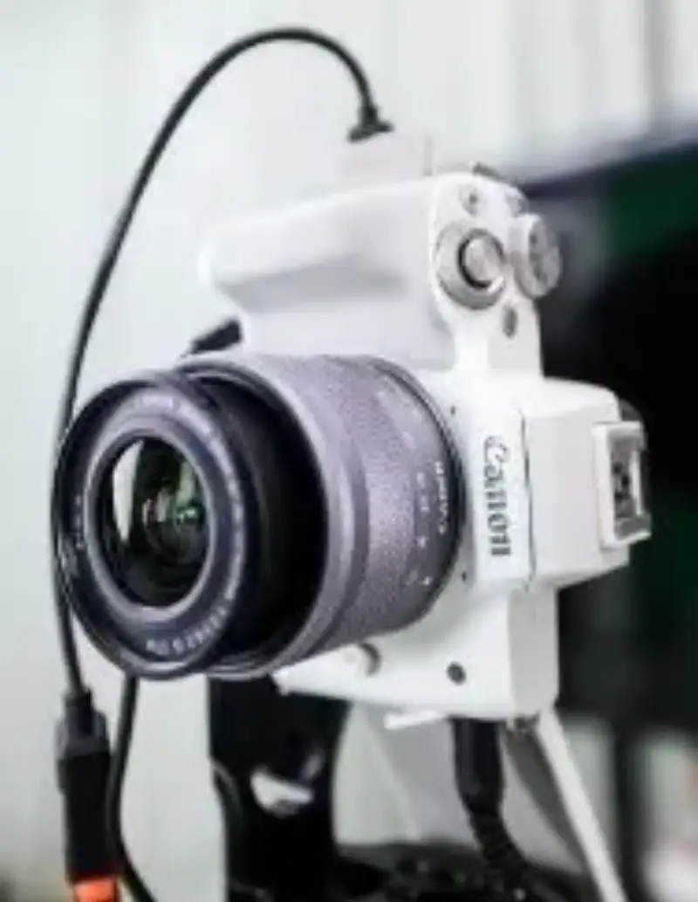
Canon EOS M50 Mark II

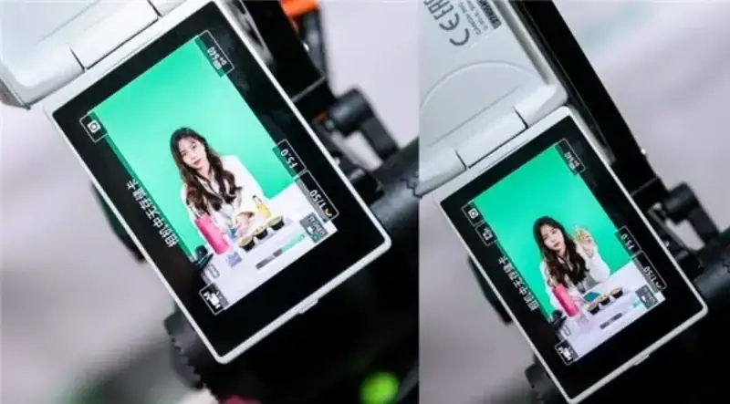
Whether eye focus or product focus, the EOS M50 Mark II is fast and steady.
In addition, on the JiaLive team's advice, the Forvil Windsor Forest room replaced its computer with a higher-spec unit, so the stream runs more smoothly. Through advice on background images and on arranging products in the room, the whole 25,000-yuan room solution achieves a high-quality streaming result.

Streaming frame comparison: before vs after.
Case 3: wine and food. Only clarity can convey the mood.
RIO is a new-style alcoholic drink brand loved by young people. In recent years, slogans such as 'a little tipsy alone' and 'a small drink for one' have won the hearts of young consumers. On how to improve the room, the RIO room's service provider, Wenzihui, an e-commerce platform under the Wantong Group, hopes the renovation will improve both image quality and green-screen keying. 'Right now the room is small, and it relies on one camera. The host's face is not very clear, and the frame often lags and stutters,' said Luosi, head of the RIO room at Wenzihui.
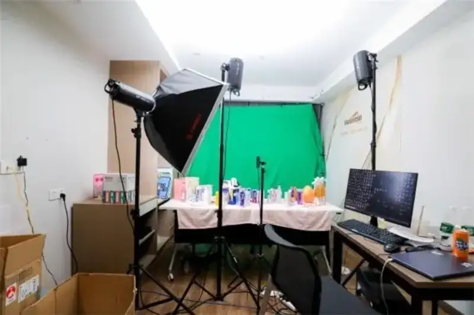

Before
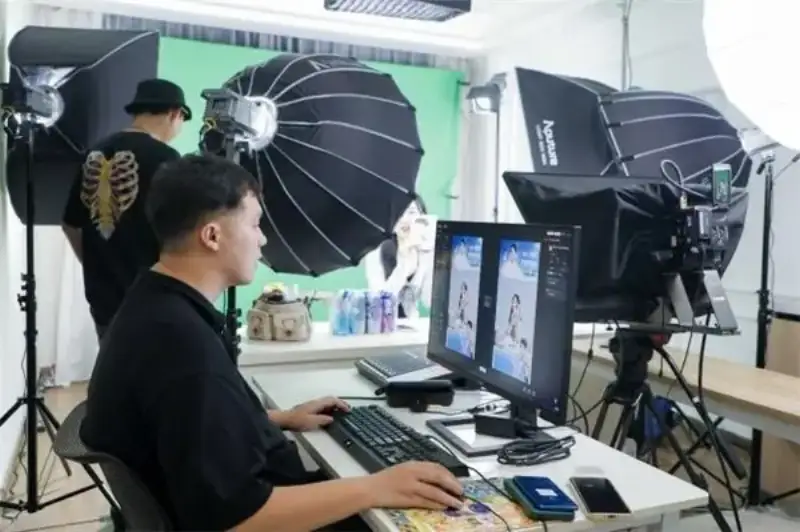
After
Based on the actual room size, the JiaLive team reduced the number of lights and cameras, and programmed several light setups to create different themed moods. Through the 4K digital cinema camera Canon EOS C70 with the RF15-35mm lens, the host's skin looks finer and more textured, and product detail gains a lot. In the industry, building full-channel streaming marketing plans for brands is one of Wenzihui's strengths, and Wenzihui keeps innovating to set the RIO room's mood, sometimes joining current trends to try eye-catching ways to stream. For example, in a special session on the theme 'city escape plan', the room moved outdoors. The small, light Canon EOS C70 and its clear image help greatly in delivering content, and it is very easy to operate, so it also performs well outdoors.

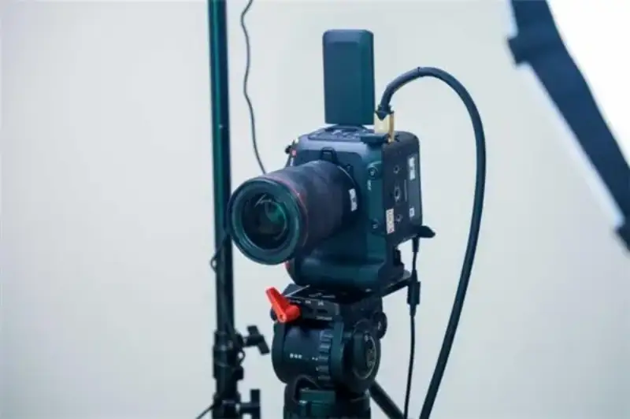
Canon EOS C70

Streaming frame comparison: before vs after.
Case 4: jewelry. The craft detail must shine.
TSL (Tse Sui Luen Jewellery) is a famous jewelry group in Asia. Its room service provider is Kulu Media, which focuses on offering brands and merchants overall brand marketing services on and off Taobao. In the TSL room, the JiaLive team was struck by the extraordinary craft of the jewelry. The hard part of jewelry streaming is that the products are small and delicate, so it is hard to show their craft and texture through a lens. 'Image quality is especially critical in jewelry streaming, otherwise the quality of the jewelry does not come through. It is a real risk for gold to look like plastic, for the refinement of diamonds not to show, let alone for the fine polish of the jewelry to come through precisely,' said Mao Kaijia, head of the TSL room at Kulu Media.

The TSL room must show delicate jewelry of different sizes, shapes, and materials every day.
Right now the TSL room uses a single camera, and the host operates it alone, magnifying the frame to show product detail. This way of showing brings slow focus and unclear results. Based on the room's needs, the JiaLive team designed a dual-camera setup with the Canon EOS R10. The host can operate it alone, switching frames with one touch, so it is easy to use and shows jewelry detail clearly. The team also improved the light layout, so the light on the host's face looks more three-dimensional.

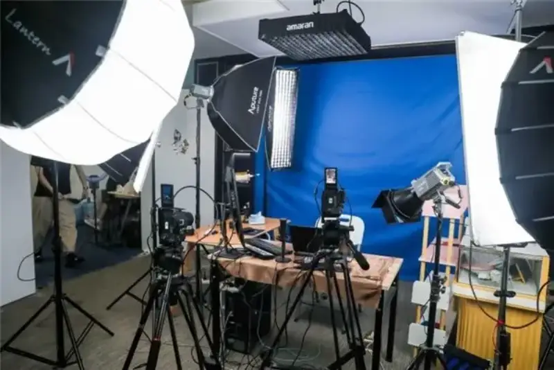
After
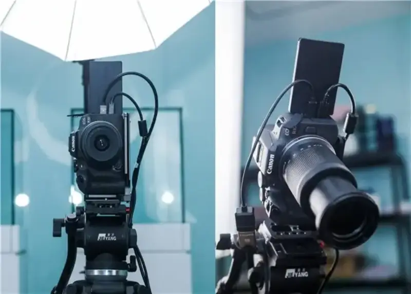
The main camera (left) and the close-up camera (right) are both the Canon EOS R10.

Display of the same jewelry product: before vs after.
After: product color reproduction and texture improve.

Streaming frame comparison: before vs after.
Takeaways from the renovation: image quality improves in every way, and professionalism makes excellence.
This renovation followed the Guide to High-Quality E-commerce Live Streaming jointly launched by Taobao Live and JiaLive. Practice shows that raising image quality helps sales conversion. By building and tuning the room as one system, from equipment, lights, and sound to the signal chain, image quality rises, product color is reproduced precisely, product detail shows clearly, the viewer experience improves greatly, consumers stay in the room, and sales conversion follows. It also proves that the Guide is practical, flexible, and extensible. Based on brand needs, room size, and product category, it can be optimized and adjusted further on top of the Guide, to maximize the streaming result.
This renovation also broke the old view of high-definition rooms. Image quality rises in every way: streaming equipment, light setup, cables, computers, and the Taobao software, and it needs guidance from a professional team. 'The quality of an e-commerce stream is affected by many factors. Professional image texture, natural and beautiful skin tone, accurate product color, a more three-dimensional light plan, clearer sound, easier frame switching, and a more reliable connection are all essential in streaming,' said Zhao Yingjun, JiaLive project manager at Canon (China).
A high-quality stream needs not only a professional high-quality camera, but also professional lights, microphones, a switcher, and cables. One part moves the whole chain. To build a complete streaming technical chain, JiaLive works closely with partners such as Aputure, Blackmagic Design, BOYA, and UGREEN, merging each side's technical skill to create together. With its professional image texture and natural color, the JiaLive high-definition streaming solution is recognized by more and more professional teams, and it has won consistent praise from industry partners.
'The room renovation plan is long-term. We hope it helps users achieve high quality at low cost, and pushes the reform and standard of high-definition image quality in the streaming industry,' said Zhao Yingjun, JiaLive project manager at Canon (China).
The renovation plan between JiaLive and Taobao Live will continue. In future it will empower more e-commerce streaming users, and raise the standard of high-definition streaming in the industry.